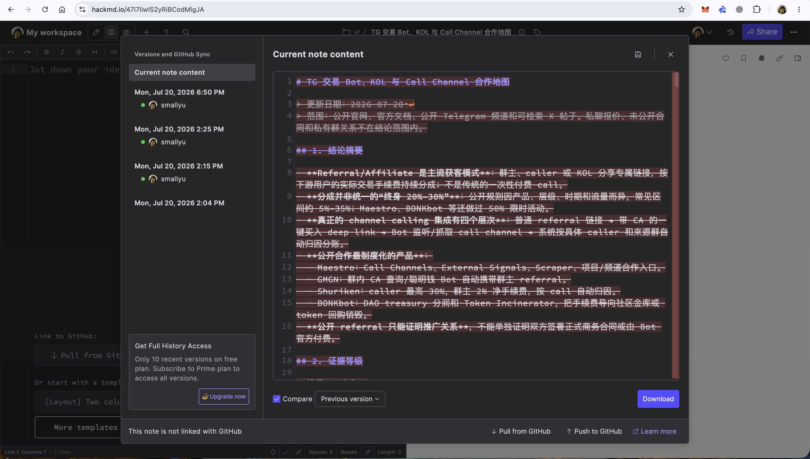
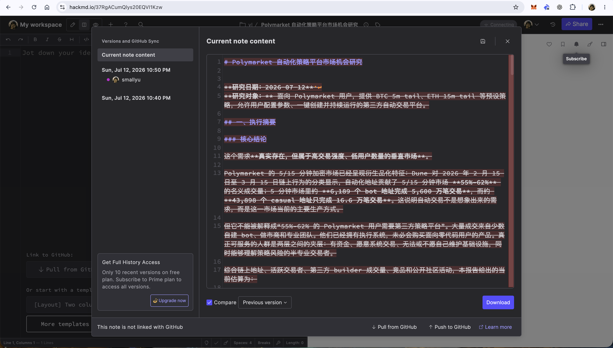

工具官网：https://hackmd.io/
一开始为什么会用呢，因为看到以太坊的团队在用，以太坊发布 weekly news 以及那个 ops panda 团队内部沟通都在用。
但是今天我发现 hackmd.io 会擅自取消我 publish 公开的文章、以及擅自删除我的文件内容：


这已经不单纯是平台内容审核的问题了。内容审核你可以不 public 我的文章，但是擅自给我内容删了、在 version history 里看到的是我自己清空了内容，这算怎么回事？
所以比起 hackmd.io 比起来，还不如直接用 github 的 wiki 或者 gist。